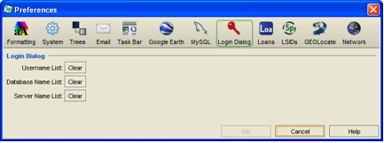

Login Dialog Preferences Login Dialog Preferences
Login Dialog Preferences Login Dialog Preferences
Login Preference
Specify automatically creates a pick list of all usernames and database names that are in use for the login dialog. The following buttons delete the names in these pick lists and they will need to be re-entered to be used again.
These caches are cleared the moment that the Clear button is clicked. The Cancel button will undo the Clear process and the list will be cleared.